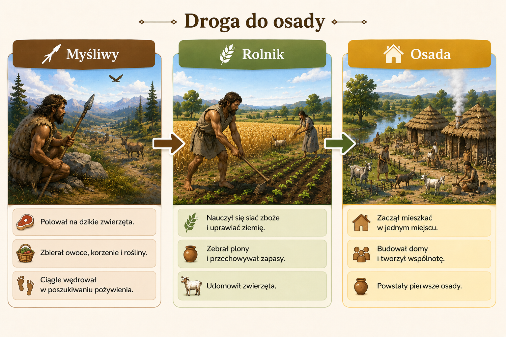
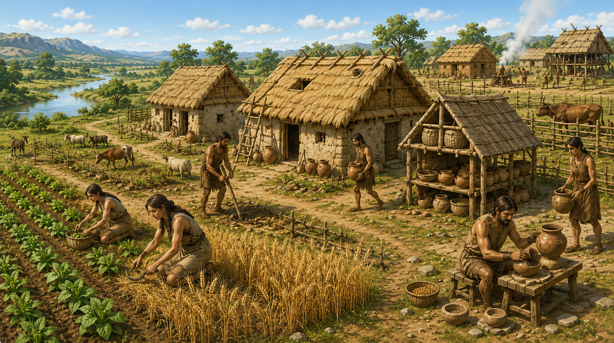
Gdy ludzie nauczyli się uprawiać rośliny i hodować zwierzęta, nie musieli już ciągle wędrować.
Zaczęli mieszkać w jednym miejscu i budować pierwsze osady.
Najstarsze ludzkie osiedla składały się z kilku chat.
Powstawały najczęściej nad jeziorami i rzekami.


Osada to miejsce, w którym ludzie mieszkali na stałe.
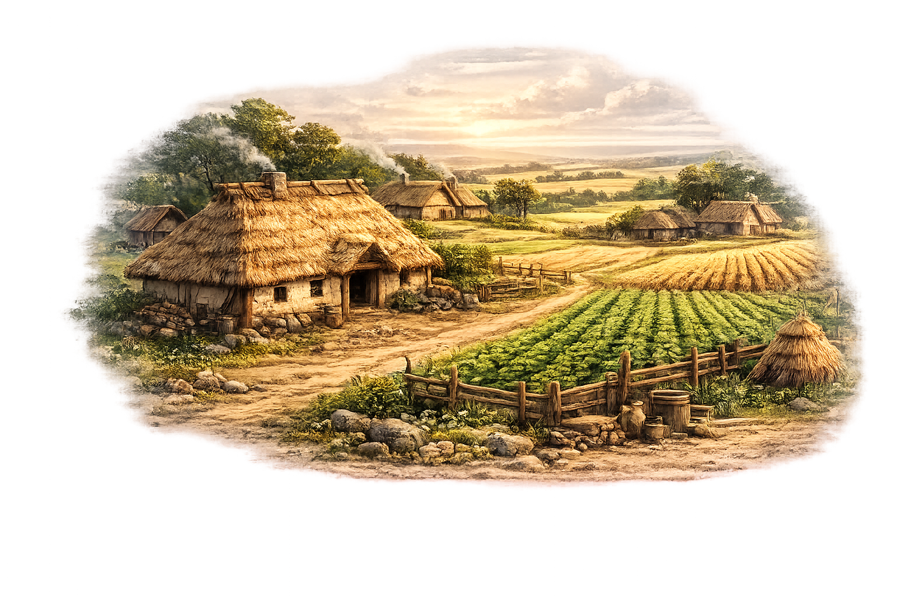
kilka domów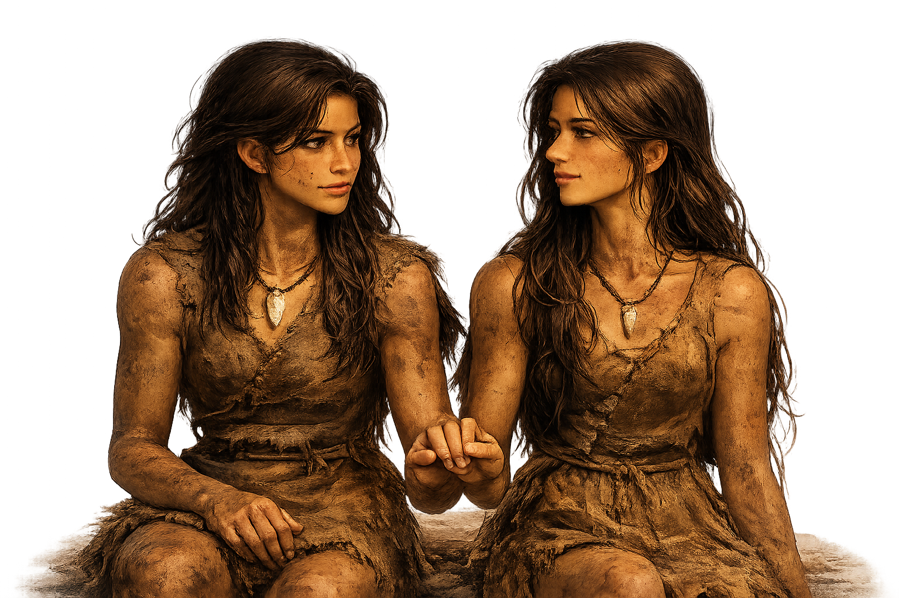
mieszkańcy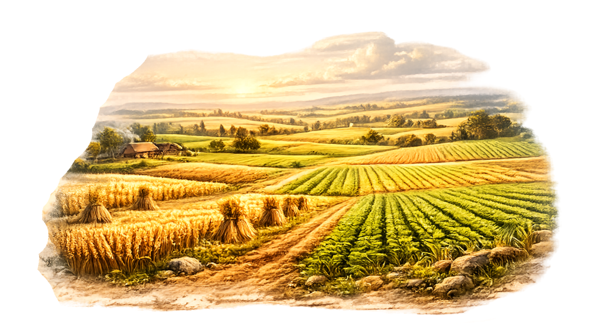
pola uprawne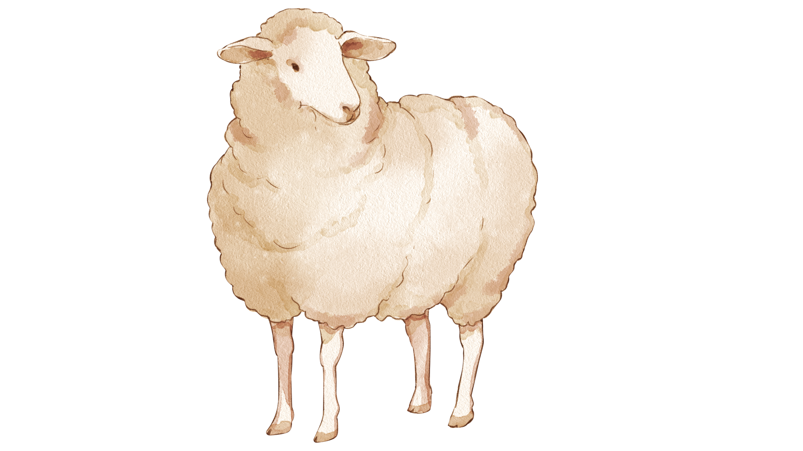
hodowali zwierzęta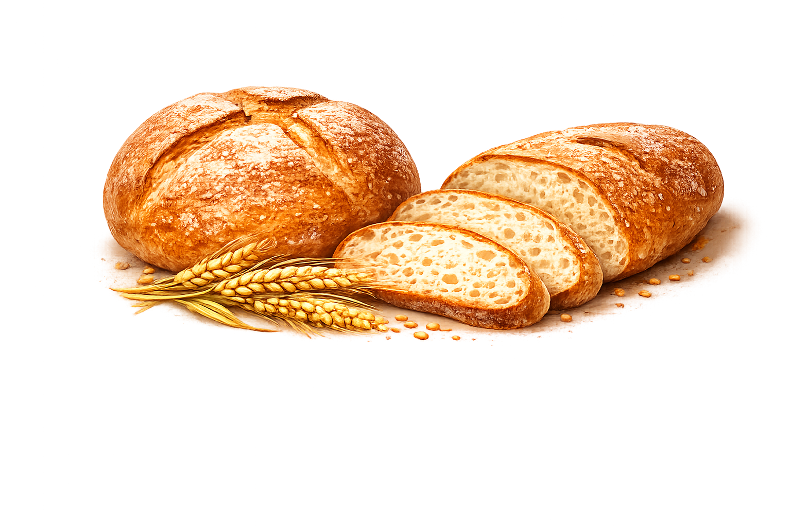
mieli stałe pożywienie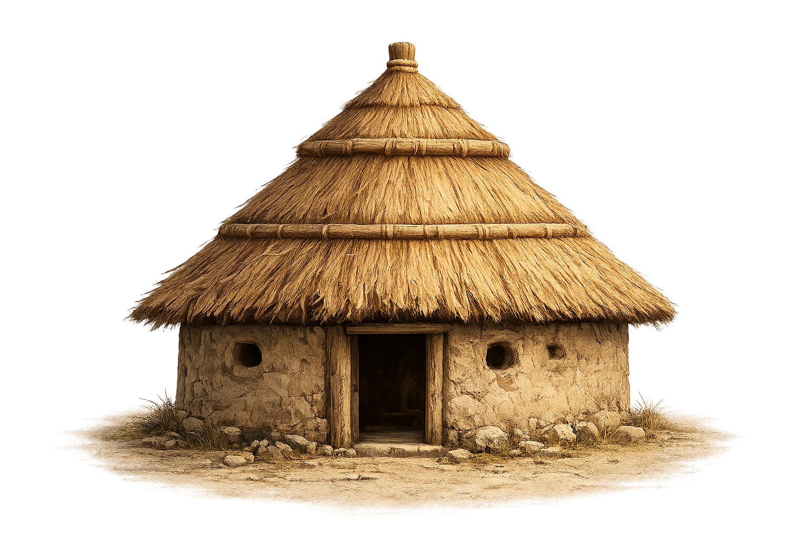
małe chaty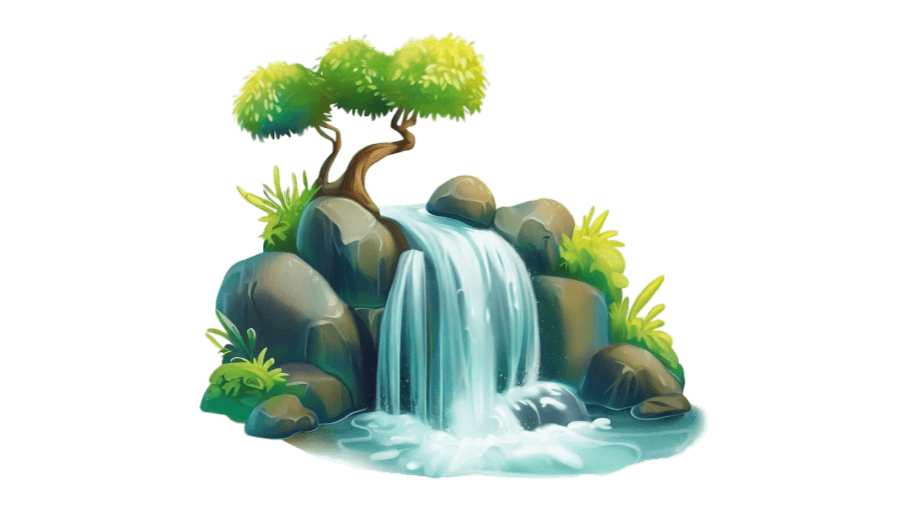
blisko rzek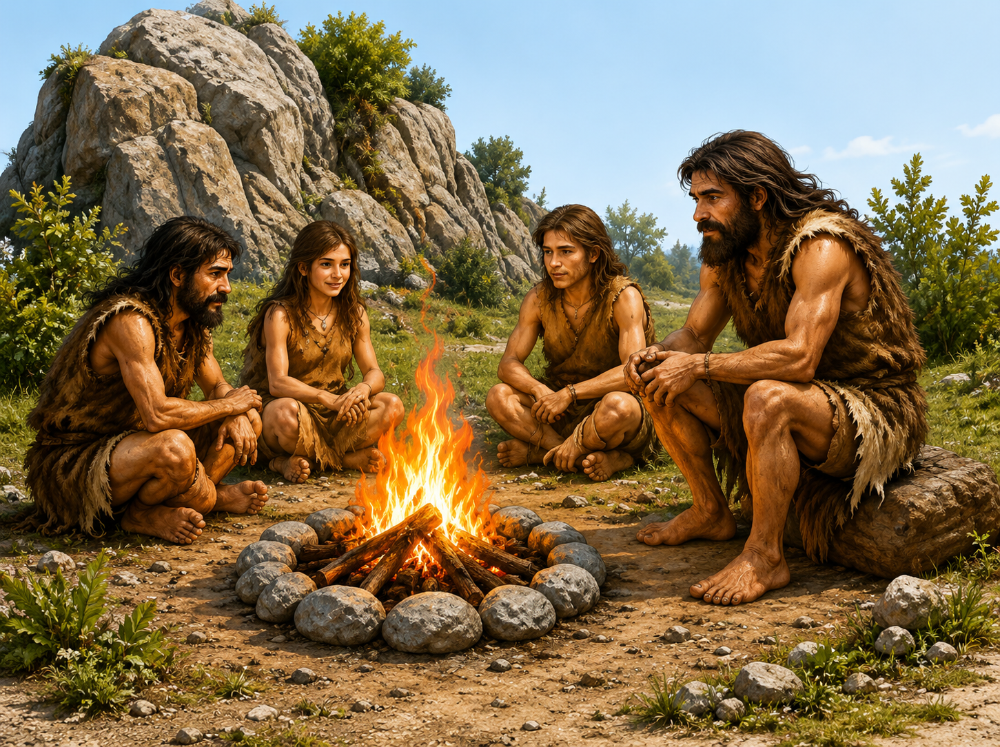
wspólne ogniska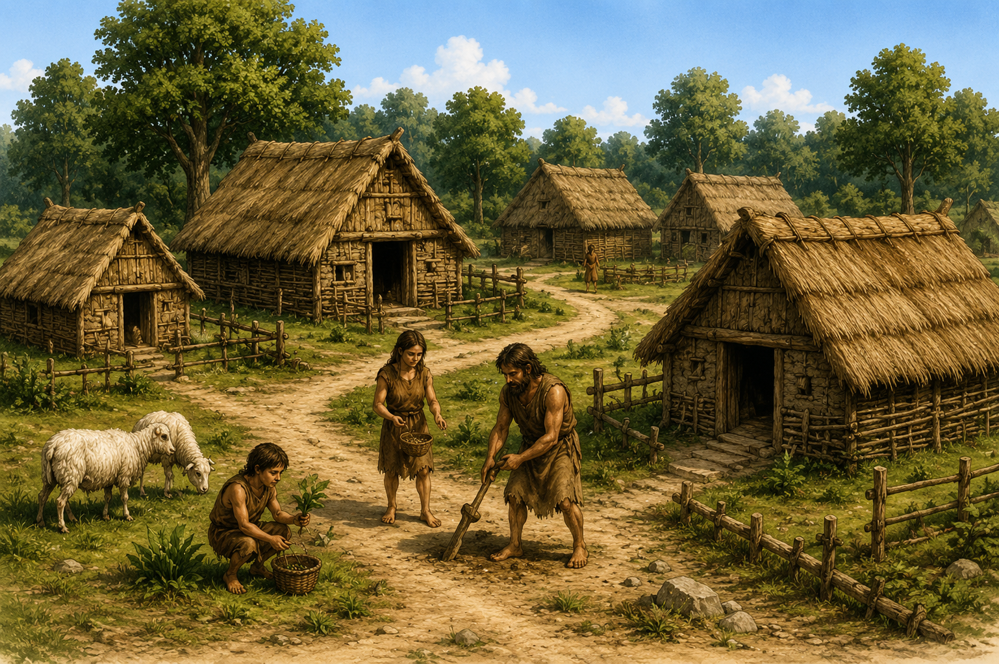
większe osady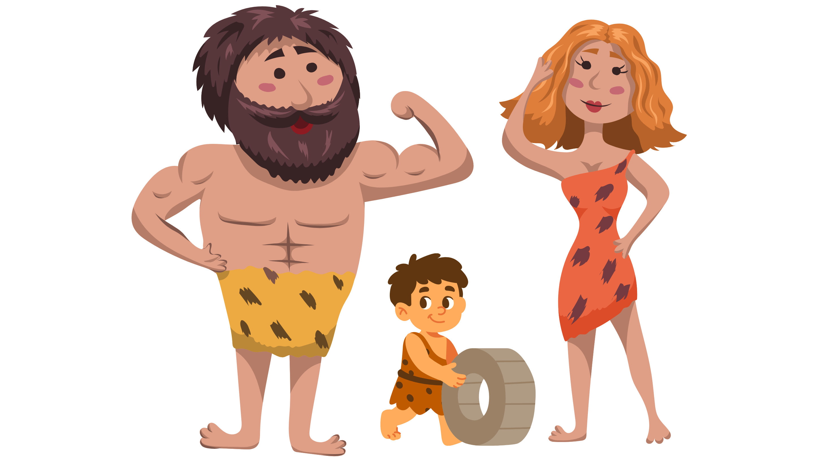
więcej mieszkańcówPierwsze osady były początkiem późniejszych wsi i miast.
➜ Dzięki osiadłemu trybowi życia ludzie mogli rozwijać swoje społeczności.